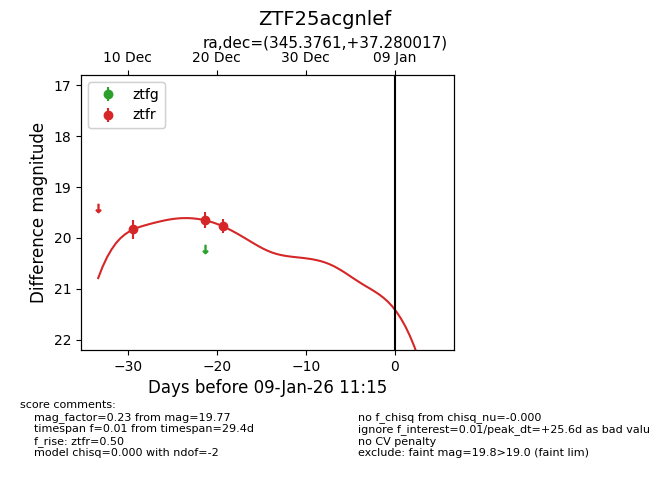
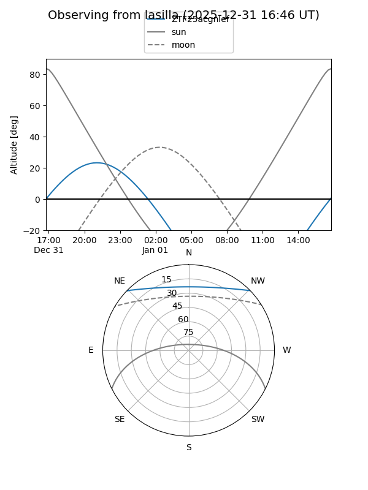
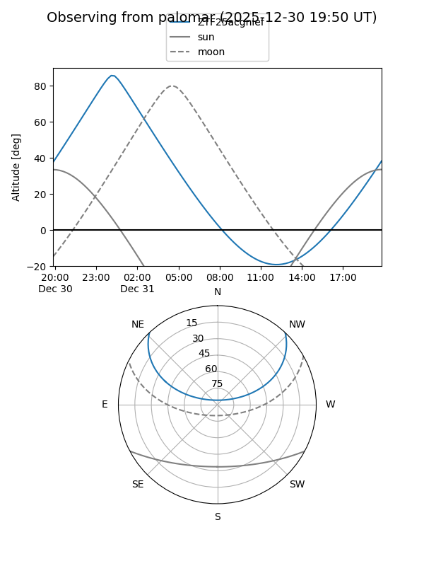

ZTF25acgnlef
Target ZTF25acgnlef at 2025-12-31 16:59
Aliases and brokers:
FINK:
Lasair:
ALeRCE:
alt names
ZTF25acgnlef (ztf,fink_ztf)
Coordinates:
equatorial (ra, dec) = 345.3761,+37.28002
equatorial (HMS+DMS) = 23:01:30.27,+37:16:48.06
galactic (l, b) = (99.8333,-20.61197)
Flags:
Photometry:
last ztfr=19.77
3 ztfr detections
Lightcurve

Visibility


Additional plots